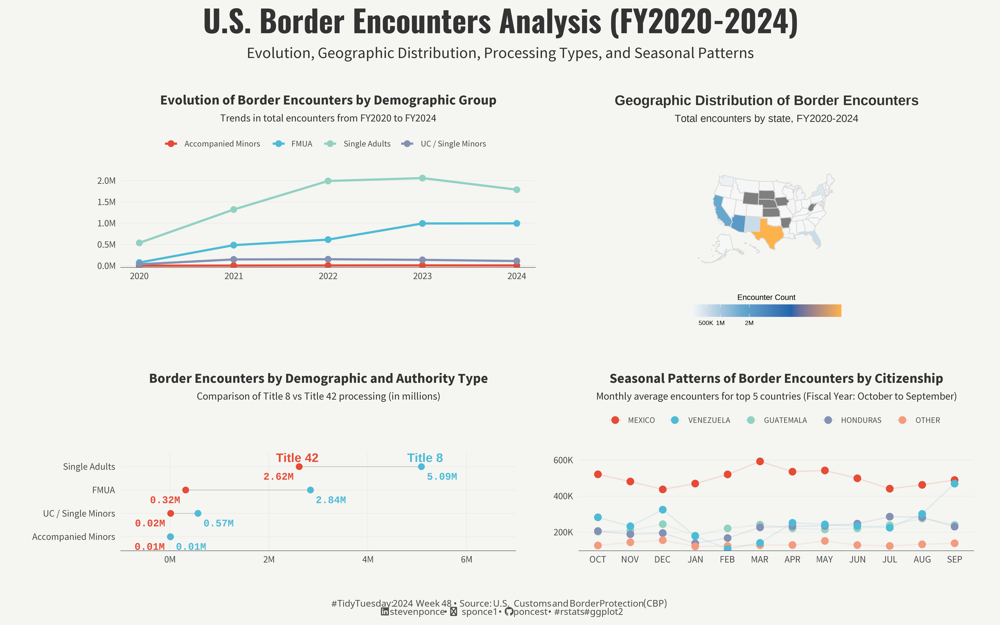

Comparison of Title 8 vs Title 42 processing (in millions)
#TidyTuesday
Author
Steven Ponce
Published
November 24, 2024

Figure 1: A four-panel visualization of U.S. Border Encounters (2020-2024). The top left shows increasing trends in encounters across demographic groups, with Single Adults being the highest. The top right displays a U.S. map highlighting border states with Texas in orange. The bottom left compares Title 8 vs Title 42 processing by demographic group. The bottom right shows seasonal patterns of encounters by country, with Mexico showing consistently higher numbers.
Steps to Create this Graphic
1. Load Packages & Setup
Show code
## 1. LOAD PACKAGES & SETUP ----if(!require("pacman"))install.packages("pacman")pacman::p_load(tidyverse, # Easily Install and Load the 'Tidyverse'ggtext, # Improved Text Rendering Support for 'ggplot2'showtext, # Using Fonts More Easily in R Graphsjanitor, # Simple Tools for Examining and Cleaning Dirty Dataskimr, # Compact and Flexible Summaries of Datascales, # Scale Functions for Visualizationglue, # Interpreted String Literalshere, # A Simpler Way to Find Your Filespatchwork, # The Composer of Plotsusmap# US Maps Including Alaska and Hawaii)### |- figure size ----camcorder::gg_record( dir =here::here("temp_plots"), device ="png", width =16, height =10, units ="in", dpi =320)### |- resolution ----showtext_opts(dpi =320, regular.wt =300, bold.wt =800)
### |- tidy data ----# 1. Demographic Evolution Datademographic_trends_df<-cbp_resp|>group_by(fiscal_year, demographic)|>summarise(total_encounters =sum(encounter_count), .groups ='drop')|>arrange(fiscal_year, demographic)# Get end points for direct labelinglabel_data<-demographic_trends_df|>filter(fiscal_year==max(fiscal_year))# 2. State Map Datastate_map_df<-cbp_state|>group_by(state)|>summarise(encounter_count =sum(encounter_count), .groups ='drop')# 3. Demographic Authority Datademographic_authority_df<-cbp_resp|>group_by(demographic, title_of_authority)|>summarise(total_encounters =sum(encounter_count), .groups ='drop')|>pivot_wider( names_from =title_of_authority, values_from =total_encounters)|>mutate( demographic =fct_reorder(demographic, `Title 8`), `Title 8` =`Title 8`/1e6, `Title 42` =`Title 42`/1e6)# 4. Seasonal Citizenship Data# Get correct month order (Fiscal Year)month_order<-c("OCT", "NOV", "DEC", "JAN", "FEB", "MAR", "APR", "MAY", "JUN", "JUL", "AUG", "SEP")top_10_citizenship<-cbp_resp|>group_by(citizenship)|>summarise(total_encounters =sum(encounter_count), .groups ='drop')|>arrange(desc(total_encounters))|>slice_head(n =10)|>pull(citizenship)# Get top 5 countries instead of 10 to reduce visual complexitytop_5_citizenship<-head(top_10_citizenship, 5)seasonal_citizenship_df<-cbp_resp|>filter(citizenship%in%top_10_citizenship)|>group_by(month_abbv, citizenship)|>summarise(avg_encounters =mean(encounter_count), .groups ='drop')|>mutate( month_abbv =factor(month_abbv, levels =month_order), citizenship =factor(citizenship, levels =top_10_citizenship))
5. Visualization Parameters
Show code
### |- plot aesthetics ----bkg_col<-"#f5f5f2"title_col<-"gray20"subtitle_col<-"gray20"caption_col<-"gray30"text_col<-"gray30"### |- titles and caption ----# iconstt<-str_glue("#TidyTuesday: { 2024 } Week { 48 } • Source: U.S. Customs and Border Protection (CBP)<br>")li<-str_glue("<span style='font-family:fa6-brands'></span>")gh<-str_glue("<span style='font-family:fa6-brands'></span>")bs<-str_glue("<span style='font-family:fa6-brands'> </span>")# texttitle_text<-str_glue("U.S. Border Encounters Analysis (FY2020-2024)")subtitle_text<-"Evolution, Geographic Distribution, Processing Types, and Seasonal Patterns"caption_text<-str_glue("{tt} {li} stevenponce • {bs} sponce1 • {gh} poncest • #rstats #ggplot2")### |- fonts ----font_add("fa6-brands", here::here("fonts/6.6.0/Font Awesome 6 Brands-Regular-400.otf"))font_add_google("Oswald", regular.wt =400, family ="title")font_add_google("Source Sans Pro", family ="text")font_add_google("Roboto Mono", family ="numbers")font_add_google("Noto Sans", regular.wt =400, family ="caption")showtext_auto(enable =TRUE)### |- plot theme ----theme_set(theme_minimal(base_size =14, base_family ="text"))theme_update( plot.background =element_rect(fill =bkg_col, color =bkg_col), panel.background =element_rect(fill =bkg_col, color =bkg_col), legend.position ="bottom", plot.margin =margin(t =10, r =20, b =10, l =20), axis.title.x =element_text(margin =margin(10, 0, 0, 0), size =rel(1.1), color =text_col, family ="text", face ="bold", hjust =0.5), axis.title.y =element_text(margin =margin(0, 10, 0, 0), size =rel(1.1), color =text_col, family ="text", face ="bold", hjust =0.5), axis.line.x =element_line(color ="#252525", linewidth =.2), plot.title =element_text(size =rel(1.14), face ="bold", hjust =0.5, color =title_col), plot.subtitle =element_text(size =rel(0.86), hjust =0.5, color =subtitle_col), axis.title =element_text(size =rel(0.93), face ="bold", color =text_col), axis.text =element_text(size =rel(0.79), color =text_col), legend.title =element_blank(), legend.text =element_text(size =rel(0.71), color =text_col), panel.grid.major.x =element_blank(), panel.grid.major.y =element_line(color ="gray90", linewidth =0.2), panel.grid.minor =element_blank())
6. Plot
Show code
### |- plot 1 ----demographic_evolution<-demographic_trends_df|>ggplot(aes(x =fiscal_year, y =total_encounters, color =demographic))+# Geomsgeom_line(size =1.2)+geom_point(size =3)+# Scalesscale_color_manual( values =c("#E64B35", "#4DBBD5", "#91D1C2", "#8491B4", "#F39B7F"))+scale_y_continuous( labels =label_number(scale =1e-6, suffix ="M"), breaks =seq(0, 2000000, by =500000), expand =expansion(mult =c(0.02, 0.1)))+scale_x_continuous( breaks =2020:2024, limits =c(2020, 2024))+# Labslabs( title ="Evolution of Border Encounters by Demographic Group", subtitle ="Trends in total encounters from FY2020 to FY2024", x =NULL, y =NULL, color =NULL)+# Themetheme( legend.position ="top", plot.margin =margin(t =20, r =20, b =20, l =20))### |- plot 2 ----state_encounters_map<-plot_usmap( data =state_map_df, values ="encounter_count", color ="#d9d9d9", size =0.25)+# Scalescoord_sf(clip ="off")+scale_fill_gradientn( colors =c("#f7f7f7","#67a9cf","#2166ac","#feb24c"), breaks =c(500000, 1000000, 2000000), labels =c("500K", "1M", "2M"), guide =guide_colorbar( title ="Encounter Count", title.position ="top", title.hjust =0.5, barwidth =12, barheight =1, direction ="horizontal", ticks =FALSE, margin =margin(t =10, b =10)))+# Labslabs( title ="Geographic Distribution of Border Encounters", subtitle ="Total encounters by state, FY2020-2024", x =NULL, y =NULL)+# Themetheme( axis.text =element_blank(), axis.title =element_blank(), axis.ticks =element_blank(), panel.grid =element_blank(), axis.line.x =element_blank(), legend.position ="bottom", plot.background =element_rect(fill =bkg_col, color =bkg_col), panel.background =element_rect(fill =bkg_col, color =bkg_col), legend.background =element_rect(fill =bkg_col, color =NA), plot.title =element_text(size =16, face ="bold", hjust =0.5, color =title_col), plot.subtitle =element_text(size =12, hjust =0.5, color =subtitle_col))### |- plot 3 ----title_42_color<-"#E64B35"title_8_color<-"#4DBBD5"demographic_authority_plot<-ggplot(demographic_authority_df)+# Geomsgeom_vline( xintercept =seq(0, 6, by =2), color ="gray90", linewidth =0.2)+geom_segment(aes( y =demographic, x =`Title 42`, xend =`Title 8`, yend =demographic), color ="gray80", linewidth =0.5)+geom_point(aes(x =`Title 42`, y =demographic), color =title_42_color, size =3)+geom_point(aes(x =`Title 8`, y =demographic), color =title_8_color, size =3)+geom_text(aes( x =`Title 42`, y =demographic, label =sprintf("%.2fM", `Title 42`)), color =title_42_color, vjust =2, hjust =1.2, size =4, family ="mono", fontface ="bold")+geom_text(aes( x =`Title 8`, y =demographic, label =sprintf("%.2fM", `Title 8`)), color =title_8_color, vjust =2, hjust =-0.2, size =4, family ="mono", fontface ="bold")+annotate("text", x =3, y =max(as.numeric(demographic_authority_df$demographic))+0.2, label ="Title 42", color =title_42_color, hjust =1, vjust =0, size =5, fontface ="bold")+annotate("text", x =4.8, y =max(as.numeric(demographic_authority_df$demographic))+0.2, label ="Title 8", color =title_8_color, hjust =0, vjust =0, size =5, fontface ="bold")+# Scalesscale_x_continuous( breaks =seq(0, 6, by =2), labels =function(x)paste0(x, "M"), limits =c(0, 6), expand =c(0.15, 0.1))+scale_y_discrete()+# Labslabs( title ="Border Encounters by Demographic and Authority Type", subtitle ="Comparison of Title 8 vs Title 42 processing (in millions)", x =NULL, y =NULL)+# Themetheme( panel.grid =element_blank(), axis.title.y =element_blank(), plot.margin =margin(t =30, r =20, b =20, l =20), axis.text.y =element_text(size =11))### |- plot 4 ----seasonal_citizenship_plot<-seasonal_citizenship_df|>filter(citizenship%in%top_5_citizenship)|>mutate( month_abbv =factor(month_abbv, levels =month_order), citizenship =fct_reorder(citizenship, -avg_encounters, sum))|>ggplot(aes(x =month_abbv, y =avg_encounters, color =citizenship, group =citizenship))+# Geomsgeom_line(alpha =0.15, linewidth =0.7)+geom_point(size =3.5)+# Scalesscale_color_manual( values =c("#E64B35", "#4DBBD5", "#91D1C2", "#8491B4", "#F39B7F"))+scale_y_continuous( labels =label_number(scale =1, suffix ="K"), breaks =seq(0, 600, by =200), expand =expansion(mult =c(0.02, 0.1)))+# Labslabs( title ="Seasonal Patterns of Border Encounters by Citizenship", subtitle ="Monthly average encounters for top 5 countries (Fiscal Year: October to September)", x =NULL, y =NULL)+theme(# Legend refinements legend.position ="top", legend.direction ="horizontal", legend.spacing.x =unit(0.5, "cm"), legend.margin =margin(t =5, b =15), legend.title =element_blank(), legend.text =element_text(size =9.5), panel.grid.major.x =element_blank())### |- combined plots ----combined_plot<-(demographic_evolution+state_encounters_map+plot_layout(widths =c(1, 1)))/(demographic_authority_plot+seasonal_citizenship_plot)combined_plot<-combined_plot+plot_annotation( title =title_text, subtitle =subtitle_text, caption =caption_text, theme =theme( plot.title =element_text( family ="title", size =rel(2.5), face ="bold", hjust =0.5, color =title_col, margin =margin(b =10)), plot.subtitle =element_text( family ="text", size =rel(1.3), hjust =0.5, color =subtitle_col, margin =margin(b =20)), plot.caption =element_markdown( family ="caption", size =rel(0.75), color =caption_col, hjust =0.5, margin =margin(t =20)), plot.margin =margin(10, 10, 10, 10)))
7. Save
Show code
### |- plot image ---- # There was some issues between patchwork and ggsave# Make sure these pkgs are installedif(!require("ggplotify"))install.packages("ggplotify")if(!require("grid"))install.packages("grid")# Use Arial (Windows system font)windowsFonts(Arial =windowsFont("Arial"))font_add("fa6-brands", here::here("fonts/6.4.2/Font Awesome 6 Brands-Regular-400.otf"))# Convert patchwork plot to grobplot_grob<-as.grob(combined_plot)# Set up the PNG device with proper font handlingpng( filename =here::here("data_visualizations/TidyTuesday/2024/tt_2024_48.png"), width =16, height =10, units ="in", res =320, type ="cairo")# Enable showtext with specific settingsshowtext::showtext_begin()showtext::showtext_opts(dpi =320, regular.wt =300, bold.wt =800)# Draw the plotgrid::grid.draw(plot_grob)# Clean upshowtext::showtext_end()invisible(dev.off())# Create thumbnailmagick::image_read(here::here("data_visualizations/TidyTuesday/2024/tt_2024_48.png"))|>magick::image_resize(geometry ="400")|>magick::image_write(here::here("data_visualizations/TidyTuesday/2024/tt_2024_48.png"))